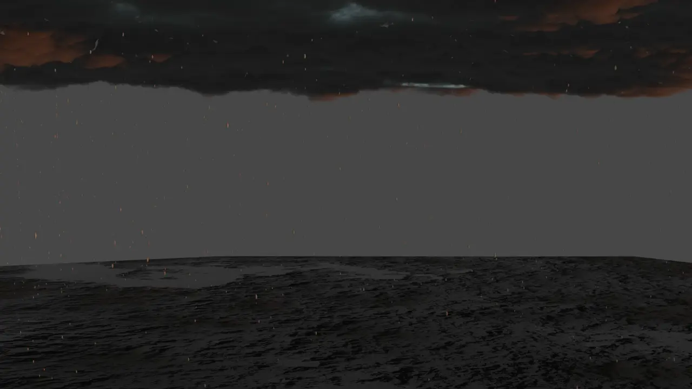

Proyecto 3D · Scripting3D project · Scripting3D 项目 · 脚本
Lluvia procedural en BlenderProcedural rain in BlenderBlender 程序化雨景
Un script en Python que genera una escena de lluvia editable.A Python script that generates an editable rain scene.一个生成可编辑雨景的 Python 脚本。
AñoYear年份
2023
TipoType类型
Individual · asignaturaSolo · coursework个人 · 课程作业
TrabajoWork工作内容
Scripting, escenaScripting, scene脚本、场景
StackStack技术
Python · Blender

Qué haceWhat it does功能
Un script en Python para Blender que monta una escena de lluvia y deja al usuario ajustarla: cantidad de gotas, movimiento y luz. La idea era no tener que colocar nada a mano.
A Python script for Blender that builds a rain scene and lets the user tweak it: drop count, motion and lighting. The point was never placing anything by hand.
El script generando la lluvia en la escenaThe script generating rain in the scene脚本在场景中生成雨
Movimiento y luzMotion and light动态与光线
Cambios de movimiento de la lluviaChanging how the rain moves改变雨的动态Variaciones de iluminación sobre la misma escenaLighting variations on the same scene同一场景的光线变化